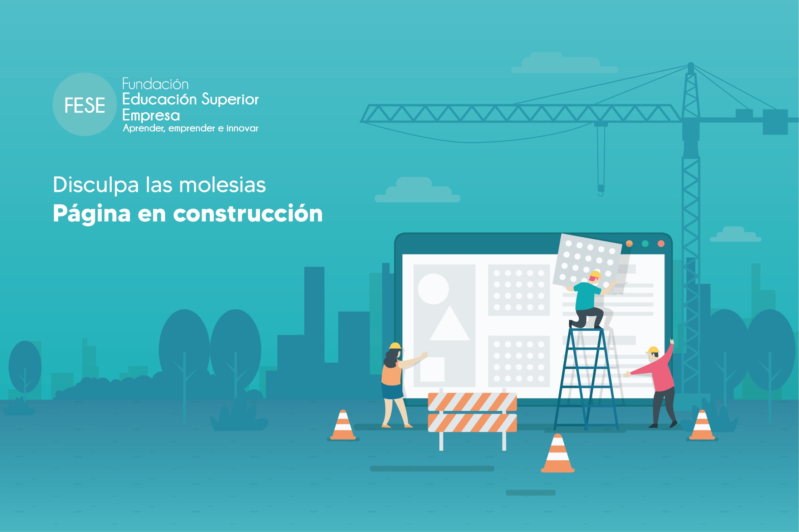

<!doctype html>
<html class="no-js" lang="en">
<head>
    <meta charset="utf-8">
    <meta name="robots"  content="index,follow"  />
    <meta http-equiv="X-UA-Compatible" content="IE=edge"/>
    <meta name="viewport" content="width=device-width,initial-scale=1.0,maximum-scale=1"/>
    <meta name="author" content="Theme Industry">
    <!-- description -->
    <meta name="description" content="boltex">
    <!-- keywords -->
    <meta name="keywords" content="">
    <!-- title -->
    <title>FESE</title>
    <!-- favicon -->
    <link rel="icon" href="images/logos/favicon.ico">
    <!-- animation -->
    <link rel="stylesheet" href="css/animate.min.css"/>
    <!-- bootstrap -->
    <link rel="stylesheet" href="css/bootstrap.min.css"/>
    <!-- font-awesome icon -->
    <link rel="stylesheet" href="css/font-awesome.min.css"/>
    <!-- magnific popup -->
    <link rel="stylesheet" href="css/magnific-popup.min.css"/>
    <!-- cube Portfolio -->
    <link rel="stylesheet" href="css/jquery.fancybox.min.css"/>
    <!-- revolution slider -->
    <link rel="stylesheet" href="revolution/css/settings.css"/>
    <!-- owl carousel -->
    <link rel="stylesheet" href="css/owl.carousel.min.css"/>
    <link rel="stylesheet" href="css/owl.theme.default.min.css"/>
    <!-- bundle css -->
    <link rel="stylesheet" href="css/core.min.css"/>
    <!-- style -->
    <link rel="stylesheet" href="css/style.min.css"/>
    <!----REFERENCIA AL BOOSTRAPS EN CSS/STYLE.CSS-->
    <!-- <link rel="stylesheet" href="css/style.css"/> -->
    <!-- Custom Style -->
    <link rel="stylesheet" href="css/custom.css"/>
    <!----Se agrega el estilo para el boton de whatsApp-->
    <link rel="stylesheet" href="style-button-ws.css">
    <link rel="stylesheet" href="https://stackpath.bootstrapcdn.com/bootstrap/4.5.2/css/bootstrap.min.css">
    
    <style>
     
     .contenedor_imagen
     {
        position: fixed; /* Fija el elemento en la ventana del navegador */
        top: 0; /* Lo coloca en la parte superior de la ventana */
        left: 0; /* Lo coloca en la parte izquierda de la ventana */
        width: 100%; /* Ocupa el 100% del ancho disponible */
        height: 100%; /* Ocupa el 100% del alto disponible */
        overflow: hidden; /* Evita que haya desplazamiento vertical */


     }

    
    .bg-image 
    {
      background-image: url('images/index/Pagina_en_construccion.jpg'); 
      /**background-size: cover;**/
      background-size: 100% 100%; 
      background-position: center center;
      height: 100vh; 
    }

    @media (max-width: 550px) 
    {
        
        .bg-image 
        {         
        
        background-image: url('images/index/Pagina_en_construccion_cel.jpg');
        background-size: 100% 100%; 
            
        
       
        }

        
    }
        

        
      
    </style> 

</head>

<body >


    
    <div class="container-fluid">
        <div class="row">
            <div class="col-12 contenedor_imagen  bg-image">
                <!---->
            </div>
        </div>
    </div>
    
    
    <!--<div class="container-fluid">
        <div class="row">
          <div class="col-12 imagen">            
            
          </div>
        </div>
    </div>-->

   <!--<div class="container-fluid">
        <div class="row">
            <div class="col-12">
                
                <picture>
                    
                    <source media="(max-width: 576px)" srcset="images/index/Pagina_en_construccion_cel.jpg height:100%;">
                    
                    
                </picture>
            </div>
        </div>
    </div>-->
    
 
</body>
</html>